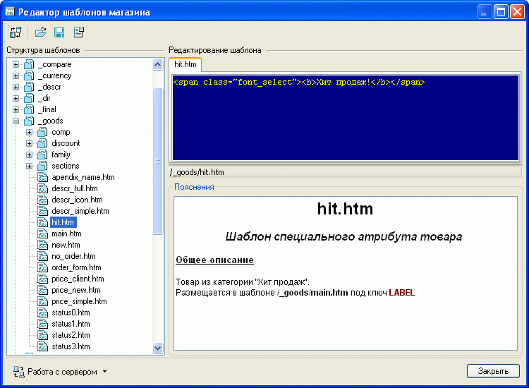

Данная настройка предназначена для профессионалов, умеющих создавать и редактировать шаблоны!
Поскольку редактирование шаблонов требует специальных познаний (HTML, CSS), а также знания принципов построения и работы комплекса Melbis Shop, не_рекомендуется самостоятельно редактировать шаблоны.
Внешний вид (дизайн) страниц интернет-магазина хранится в шаблонах. Редактирование шаблонов можно произвести, вызвав из главного окна программы "Настройки-Редактор шаблонов магазина" окно редактора шаблонов магазина. В левой части окна редактора отображается девево шаблонов. Выбрав необходимый, в правой части окна вверху можно увидеть htm-код шаблона, внизу- пояснения:

Шаблоны магазина хранятся на сервере, поэтому для работы с редактором необходима возможность связи с сервером.
В отличие от простой корректировки файлов по FTP, редактор шаблонов позволяет одновременно просматривать и корректировать несколько файлов.
После внесения изменений шаблон следует сохранить.